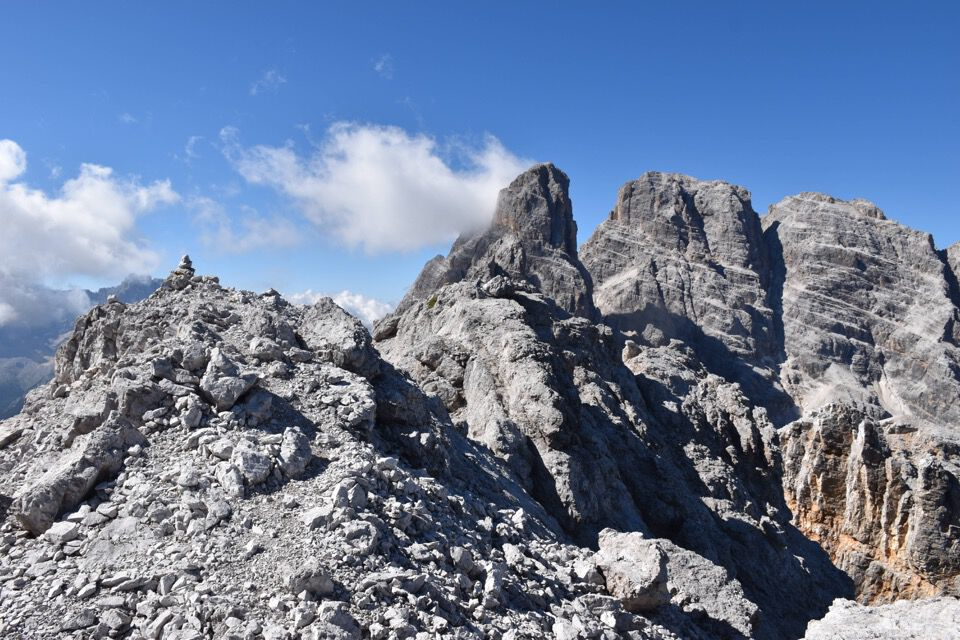
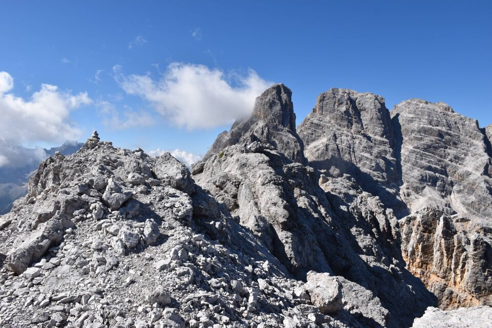
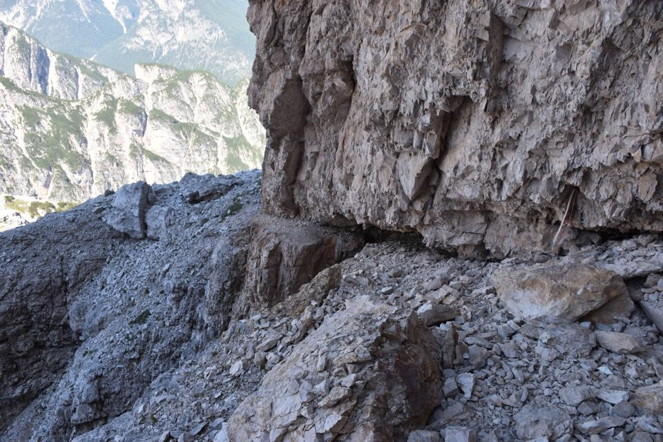

Trovo svilenti le montagne: voglio «possederle» ma esse sfuggono sempre. Guardo un monte che pur ho salito e studiato: mi pare di non esserci mai stato né di sapere alcunché di esso. Salire in cima non è sufficiente. Le cenge sono soddisfacenti perché, «entrando» nel monte, ce lo fanno conoscere un po' meglio. Allora la combinazione «cima + cengia» si rivela un buon compromesso nella vana lotta per la conquista epistemica del monte.
Partiamo dai pressi di Malga Popena.
Il gruppo del Cristallo è meraviglioso: i colori delle crode sono bellissimi, colori che però non sono capace di fotografare correttamente.
L'amena testata della val Popéna.
C'innalziamo verso la val de le Barache.
Geometrie dolomitiche.
Peccato che la facile via normale del Cristallino sia stata violentata con la posa di numerose funi di metallo.
Anche solo percorrere la turistica via normale è soddisfacente, per la grandiosa bellezza dei panorami.
Un Piz Popéna fumante.
Carbonin sovrastata dall'amena conca di Pratopiazza, con il monte Specie e il Picco di Vallandro.
A Pratopiazza e sul monte Specie ci sono stato un mese fa con Lou: c'era tutto il mondo, ma il luogo è di una bellezza infinita.
Le romantiche montagne di Bráies: piccolo e ardito il Sasso del Signore. Non posso che pensare a Von Glanvell: «Dall'aereo pulpito del monte Sella il ragazzo ebbe modo di vedere quante e quali vette si stendessero ancora a Sud. E comprese. Ad esse avrebbe dedicato la sua esistenza» (*).
Vedo anche il Gran Pilastro (val di Tures, Aurine), che speravo di salire il giorno seguente.
Bellissimi i ghiacciai del Grossvenediger.
Guardo il Cristallo da Nord e penso a Michl.
Le vicine Punte Mosca (sx), Clementina ed Elfie.
 

Ci caliamo alla pittoresca forcella de le Bance.
Dalla forcella verso la val Popéna...
...e verso la val de le Bance.
Giú fino ad imboccare la cengia.
Guardiamoci anche un po' attorno: qui i Tre Scarperi, con evidentissima la mitica Cengia della Caccia, percorsa proprio un anno fa.
Non Tre ma Due Cime.
Girato l'angolo si entra in val Cristallino: che bello!
Ed eccoci alla famosa interruzione della cengia, i camosci saltano, ma non mi sembra saggio imitarli.
Da una parte si fa una sosta su un grosso masso, dall'altra ci sono due chiodi. Il secondo può anche superare il passaggio in spaccata, cosa troppo rischiosa per il primo a cui invece conviene scendere leggermente nel buco per risalire dall'altra parte (II, piccoli appigli solidi ma sporchi).
Croda Rossa, superba.
La cengia è tanto facile quanto terrificante sembra guardandola all'indietro! Meglio il nostro verso di percorrenza...
A vedere da qua l'interruzione fa impressione.
La Croda dei Baranci e le gemelle Cime Bulla. Fantastico sempre su tutte quelle cenge ascendenti sulla parete Ovest della Croda dei Baranci.
Arriviamo alla testata della val Cristallino: non resta altro che discenderla tutta per l'infame ed interminabile ghiaione.
(*) Tratto da L'avventura Dolomitica di Viktor Wolf Von Glanvell di Danilo Pianatti.***
«Ecco ancora degli alberi, di cui conosco le rugosità, e dell'acqua, di cui sento il sapore. E questi profumi d'erba e di stelle, la notte, in certe sere che il cuore si placa... come negherò questo mondo, di cui sento la potenza e la forza? Eppure tutta la scienza di questa terra non potrà darmi nulla che possa rendermi certo che tale mondo mi appartiene. Voi me lo descrivete e mi insegnate a classificarlo; enumerate le sue leggi, mentre, nella mia sete di sapere, ammetto che siano vere; smontate il suo congegno e la mia speranza aumenta. Al termine ultimo, mi fate sapere che questo universo incantevole e variopinto si riduce all'atomo e che l'atomo, a sua volta, si riduce all'elettrone. Tutto ciò va bene, ed io attendo che continuiate. Ma voi mi parlate di un visibile sistema planetario in cui degli elettroni gravitano intorno ad un nucleo, e mi spiegate questo mondo con un'immagine. Devo riconoscere, allora, che siete arrivati alla poesia e che io non "conoscerò" mai. Ho appena il tempo di sdegnarmene, che voi avete già cambiato teoria. Cosí questa scienza, che doveva tutto farmi conoscere, finisce nell'ipotesi, questa lucidità sprofonda nella metafora, questa incertezza si risolve in opera d'arte. C'era, dunque, bisogno di tanti sforzi? Le dolci linee di queste colline e la mano della sera su questo cuore agitato me ne insegnano molto di piú. Sono ritornato all'inizio. Capisco allora che, se posso afferrare con la scienza i fenomeni ed enumerarli, non posso comprendere altrettanto bene il mondo. Anche quando, con un dito, ne avrò interamente seguito il rilievo, non ne saprò di piú. E voi mi fate scegliere fra una descrizione che è certa, ma non mi insegna nulla, e delle ipotesi che pretendono di insegnarmi, ma non sono affatto certe. Estraneo a me stesso e a questo mondo, armato in tutto e per tutto di un pensiero che nega se stesso, non appena afferma, qual è dunque la mia condizione, in cui non posso aver pace che rifiutando di sapere e di vivere, in cui il desiderio della conquista urta contro muri che ne sfidano gli assalti? Volere significa far sorgere i paradossi. Tutto è disposto perché abbia origine questa pace ammorbidita, che danno la noncuranza, il sonno del cuore o le rinunce mortali.»
(Il mito di Sisifo, Camus)